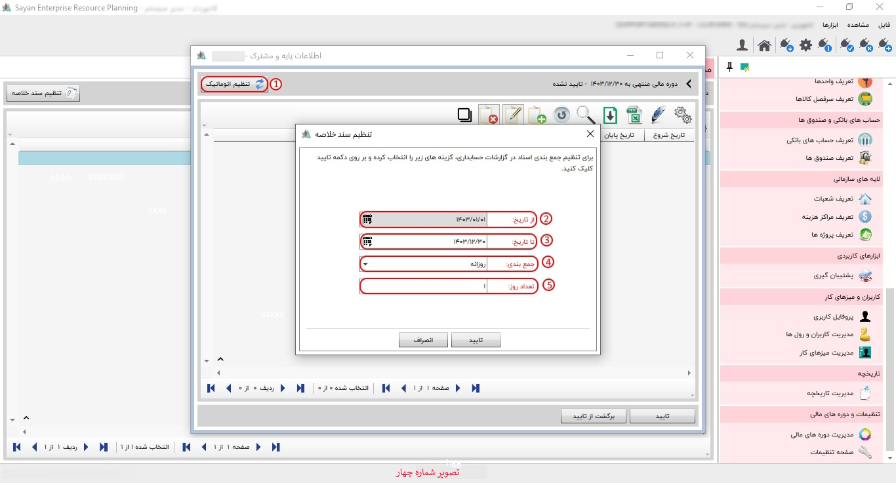

در این قسمت می توانید دوره های مالی خود را ایجاد و دوره مالی پیش فرض سیستم را تعیین کنید.


با انتخاب این آیکون، یا زدن کلید F8، صفحهی ایجاد دورهی مالی برای شما باز خواهد شد.
برای ادامه مطلب به تصویر شماره دو مراجعه نمایید.

برای ادامه مطلب به تصویر شماره سه مراجعه نمایید.

-دوره مالی پیشفرض (کادر شماره یک): این بخش به شما این امکان را میدهد که دوره مالی پیشفرض خود را انتخاب کنید. پس از انتخاب دوره مورد نظر، با کلیک بر روی گزینه ثبت، تغییرات ذخیره خواهد شد.
-تنظیم سند خلاصه (کادر شماره دو): با استفاده از گزینه تنظیم سند خلاصه، یک پنجره جدید برای شما باز میشود تا از طریق آن تنظیمات اتوماتیک را انتخاب کرده و دورههای مالی مورد نظر خود را تعیین کنید.
-کادر شماره سه: این بخش به شما این امکان را میدهد که دوره مالی پیشفرض انتخاب شده را مشاهده کنید.
برای ادامه مطلب به تصویر شماره چهار مراجعه نمایید.
-تنظیم اتوماتیک (کادر شماره یک): این بخش به شما این امکان را میدهد که دوره مالی خود را بهصورت ماهانه یا روزانه تنظیم کنید.
-از تاریخ (کادر شماره دو): در این قسمت، تاریخ شروع دوره مالی مدنظر خود را وارد نمایید.
-تا تاریخ (کادر شماره سه): در این بخش، تاریخ پایان دوره مالی مدنظر خود را وارد نمایید.
-جمعبندی (کادر شماره چهار): اگر دوره مالی شما به صورت روزانه است، گزینه جمعبندی روزانه را انتخاب نمایید.
-تعداد روز (کادر شماره پنج): در این بخش، تعداد روزهایی که میخواهید جمعبندی شوند را وارد کنید. بهعنوان مثال، اگر میخواهید هر روز جمعبندی شود، عدد یک را وارد کنید.
برای ادامه مطلب به تصویر شماره پنج مراجعه نمایید.
-جمعبندی (کادر شماره یک): در این بخش، اگر دوره مالی شما بهصورت ماهانه است، میبایست جمعبندی ماهانه خود را انتخاب نمایید.
-تعداد ماه (کادر شماره دو): برای جمعبندی تعداد ماهها، میبایست عدد مورد نظر خود را وارد نمایید. بهعنوان مثال، اگر میخواهید جمعبندی بهصورت ماهی یکبار انجام شود، عدد یک را وارد کنید.